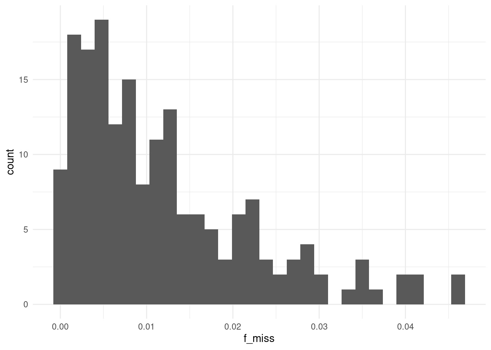
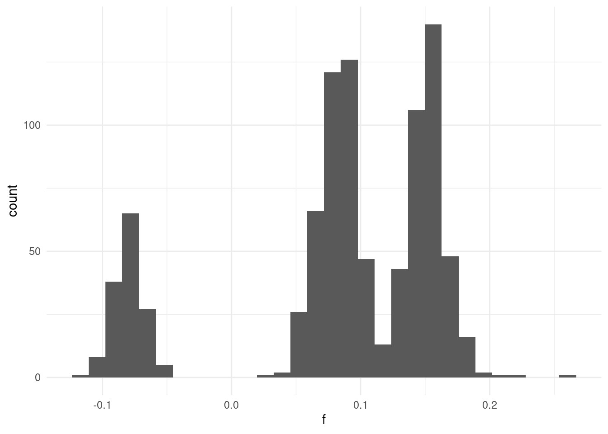

# load the libraries
library(tidyverse) # data manipulation
library(patchwork) # to compose plots
library(janitor) # to clean column names
theme_set(theme_minimal()) # change default ggplot2 theme6 Sample QC
Caution
These materials are still under development
Learning objectives
- List metrics that can be used for sample-level quality control and filtering.
- Use PLINK to calculate genotype call rates, heterozygosity, discordant sex and sample relatedness.
- Analyse quality metric results in R and assess the need for filtering in downstream analyses.
- Discuss how these quality metrics are impacted by population structure.
6.1 Per-sample metrics
Similarly to what we did for variants, we also investigate quality issues in our samples. We will consider the following metrics for each sample:
- Call rate: Fraction of missing genotypes. Variants with a high fraction of missing data may indicate overall low quality for that sample and thus be removed from downstream analysis.
- Heterozygosity: The fraction of SNVs that are heterozygous in a given sample. We expect most individuals to have a mixture of both homozygous and heterozygous SNVs. Outliers may indicate genotyping errors.
- Relatedness: Individuals who are related to each other (e.g. siblings, cousins, parents and children) may affect the association test results and create false positive hits. It is therefore good to assess if there are potential close family members before proceeding.
- Discordant sex: In humans, we expect males to have only one X chromosome and thus no heterozygous variants, while the converse is true for females. This expectation can be used to identify potential mis-matches and correct them before proceeding.
We will cover each of these below.
Set up your R session
If you haven’t done so already, start an R session with the following packages loaded:
6.2 Call rates
Similarly to what we did for variants, we can calculate how many missing genotypes each individual sample has. This can then be used to assess the need to exclude samples from downstream analyses.
There are no set rules as to what constitutes a “good call rate”, but typically we may exclude samples with greater than ~5% of missing genotypes. This threshold may vary, however, depending on the nature of data you have.
As we saw before, the option --missing generates missingness files for both samples and variants, so we don’t need to re-run the PLINK command. However, here it is as a reminder:
plink2 --pfile data/plink/1000G_subset --out results/1000G_subset --missingFor the sample missingness report the file extension is .smiss, which we can import into R as usual:
smiss <- read_tsv("results/1000G_subset.smiss") |>
clean_names()
# inspect the table
head(smiss)# A tibble: 6 × 5
number_fid iid missing_ct obs_ct f_miss
<chr> <chr> <dbl> <dbl> <dbl>
1 HG00096 HG00096 0 5353675 0
2 HG00097 HG00097 0 5353675 0
3 HG00099 HG00099 0 5353675 0
4 HG00100 HG00100 42076 5353675 0.00786
5 HG00101 HG00101 0 5353675 0
6 HG00102 HG00102 0 5353675 0 We can tabulate how many samples have missing genotypes:
table(smiss$missing_ct > 0)
FALSE TRUE
724 180 Around 20% of our samples have missing data in at least one of the variants.
For those samples with some missing data, we can check the distribution of the fraction of missing genotypes:
smiss |>
filter(f_miss > 0) |>
ggplot(aes(f_miss)) +
geom_histogram()
From this distribution it seems that most individuals have a low fraction of missing genotypes, indicating no problematic samples.
A filter is probably not even necessary in this case, as no sample seems to have more than 5% missing data. In any case, individuals with high rates of missing data, e.g. using the 5% threshold, can be excluded using PLINK’s option --mind 0.05.
6.3 Heterozygosity
Another useful metric to assess issues with sample quality is to look at the fraction of variants that are heterozygous. In general, we expect an individual to have both homozygous and heterozygous genotypes. Individuals with high heterozygosity may represent poor quality samples (e.g. contaminated samples composed of a mixture of DNA from two individuals). Conversely, individuals with high homozygosity may indicate inbreeding, which can impact the balance of allele frequencies in the population (as discussed in the Hardy-Weinberg equilibrium section) and potentially bias the results of our association tests.
There isn’t necessarily a clear value, but within a population we should expect the distribution of heterozygosity to be consistent across individuals. If an individual is an outlier (e.g. with too many homozygous or heterozygous sites), then we may infer some quality issues may have ocurred with that sample.
PLINK can calculate per-sample heterozygosity rates using the option --het, applying the variant filters defined in the variant QC section:
plink2 --pfile data/plink/1000G_subset --out results/1000G_subset --geno 0.05 --maf 0.01 --hetThe output file has extension .het, which we can import into R:
het <- read_tsv("results/1000G_subset.het") |>
clean_names()
head(het)# A tibble: 6 × 6
number_fid iid o_hom e_hom obs_ct f
<chr> <chr> <dbl> <dbl> <dbl> <dbl>
1 HG00096 HG00096 618655 604746 765962 0.0863
2 HG00097 HG00097 621546 604746 765962 0.104
3 HG00099 HG00099 618405 604746 765962 0.0847
4 HG00100 HG00100 615209 599977 759947 0.0952
5 HG00101 HG00101 618268 604746 765962 0.0839
6 HG00102 HG00102 620031 604746 765962 0.0948We can make a histogram of the fraction of homozygous individuals:
het |>
ggplot(aes(f)) +
geom_histogram()
This gives a very suspicious distribution. We clearly have different groups of samples, some with higher rates of homozygosity and others with lower rates.
This is likely a consequence of the fact we have individuals from different populations (geographic areas). This is an issue we will come back to in the population structure chapter.
For now, it is clear that we cannot easily filter samples based on their heterozygosity, as the populations are heterogeneous.
6.5 Discordant sex
Work in progress
Sorry, this section isn’t yet finished. There’s a brief explanation below, but we are still working on having data suitable to demonstrate this analysis.
Another thing that can be checked is whether the sex assigned to each of our samples is correct, based on the genetic data. This relies on having genotypes in a sex chromosome and checking whether the heterozygosity matches the expectation. For example, in humans males have one copy of the X chromosome, and females two. Therefore, all males should be homozygous for variants in the X chromosome, whereas females may have a mixture of heterozygous and homozygous sites.
We can do this quality check using PLINK’s --check-sex option:
plink2 --pfile data/plink/1000G_subset --out results/1000G_subset --check-sexUnfortunately this does now work in our example data, as we are missing genotypes on the X chromosome.
6.6 Summary
Key Points
- Key metrics for sample-level quality control include: call rate, heterozygosity, relatedness and sex assignment.
- Call rates (
--missing): samples with low call rates (e.g. <95% or >5% missing genotypes) are typically excluded.- To remove samples missing genotypes above a certain threshold use
--mind X(replaceXwith the desired fraction, e.g. 0.05).
- To remove samples missing genotypes above a certain threshold use
- Heterozygosity (
--het): samples that are outlier with regards to the number of heterozygous variants relative to other samples are typically excluded as they may represent errors (e.g. mixed samples or genotyping errors).- It is common practice to remove samples a certain number of standard deviations away from the observed distribution (e.g. +/- 3 SDs).
- However, this should only be applied to samples from relatively homogenous populations, as different sub-populations may have different distributions.
- Sample relatedness (
--king): even when individuals are thought to be unrelated, there may be some criptic relatedness that was previously unknown. Excluding very close relatives is best-practice to avoid biasing downstream association tests.- To exlude individuals above a certain kinship score threshold use
--king-cutoff X(replaceXwith the desired threshold). Common thresholds include 1/4 for full siblings, 1/8 for second degree relatives and 1/16 for third degree relatives.
- To exlude individuals above a certain kinship score threshold use
- Discordant sex (
--check-sex): it is good practice to check if the sex assigned to the individual (specified in the.psam/.famfile) matches the sex from genetic data. This can be determined from genotypes in the sex chromosomes. Individual with discordant sex may either be corrected or removed from the analysis.